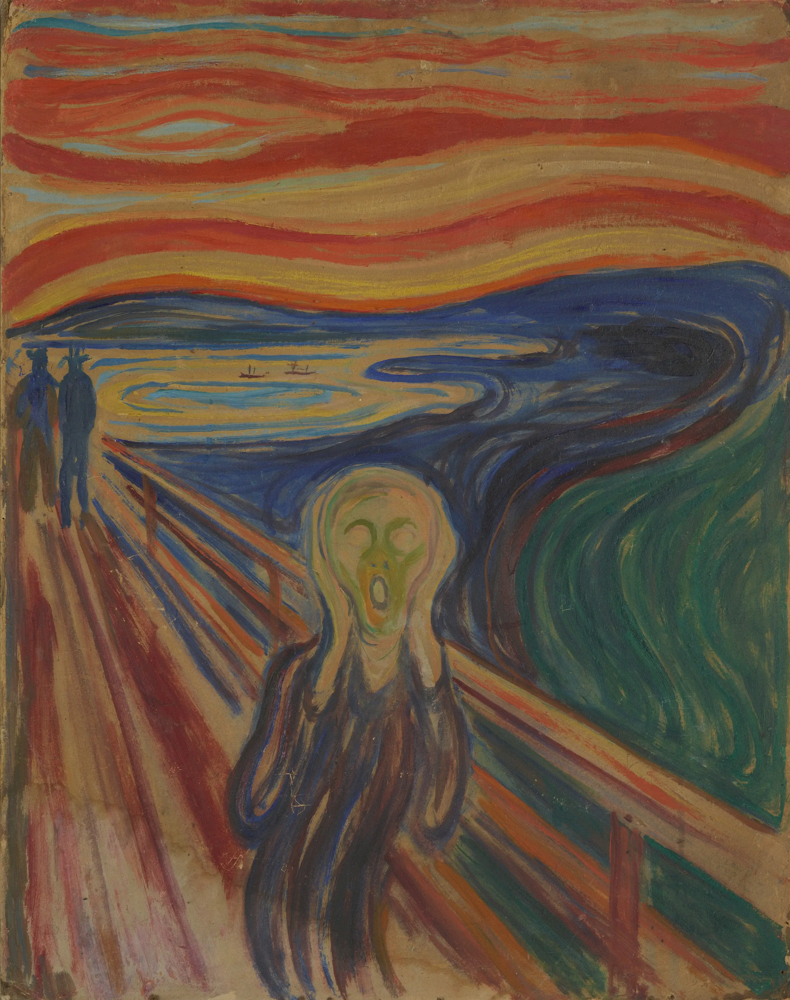
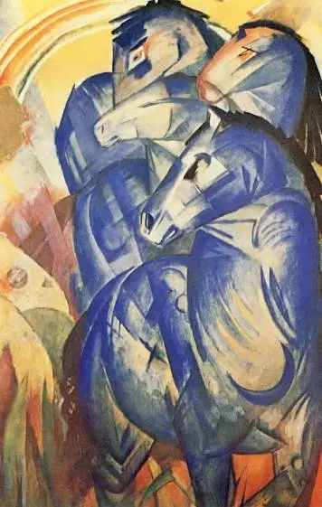
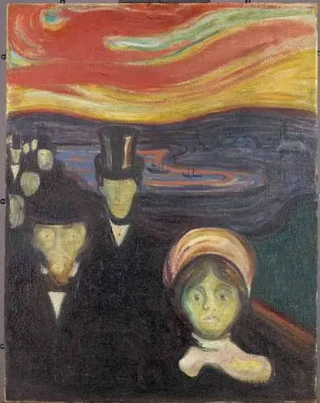
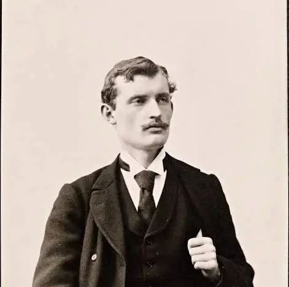

Påvirkningen på kunsten
Ekspresjonisme
Edvard Munch var en viktig pioner innen ekspresjonismen. Han brukte sterke farger, former og penselstrøk for å vise følelser som frykt, kjærlighet og angst.
Moderne kunst
Munch utfordret tradisjonell kunst ved å fokusere mer på menneskelige følelser enn på å male virkeligheten nøyaktig.
Nye kunstretninger
Måten Munch uttrykte følelser på inspirerte utviklingen av moderne kunst og påvirket flere kunstnere i Europa.

Påvirkningen på andre kunstnere
Kunstnere han inspirerte
Munch inspirerte flere kunstnere, spesielt tyske ekspresjonister. Kunstnere fra gruppen Die Brücke ble påvirket av hans måte å bruke farger og følelser på.
Hvordan ble de inspirert?
Andre kunstnere tok inspirasjon fra Munchs sterke farger, dramatiske motiver og personlige uttrykk. De begynte også å bruke kunsten til å formidle menneskelige følelser.

Påvirkningen på samfunnet
Et nytt syn på kunst
Munch utfordret samfunnets syn på hva kunst skulle være. Han viste at kunst ikke bare handlet om skjønnhet, men også om vanskelige temaer og følelser.
Psykiske følelser
Gjennom kunstverkene sine viste Munch temaer som angst, ensomhet, sorg og kjærlighet. Dette gjorde at flere mennesker kunne kjenne seg igjen i kunsten.
Munchs betydning i kunsthistorien
Edvard Munch regnes som en av Norges viktigste kunstnere. Han forandret måten mennesker uttrykte følelser gjennom kunst på, og påvirkningen hans kan fortsatt sees i moderne kunst i dag.
Et interessant faktum er at Munchs berømte kunstverk «Skrik» finnes i flere versjoner, både som maleri, tegning og grafikk.
